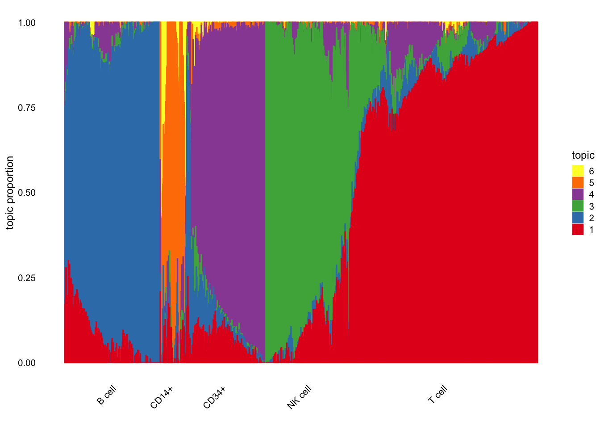
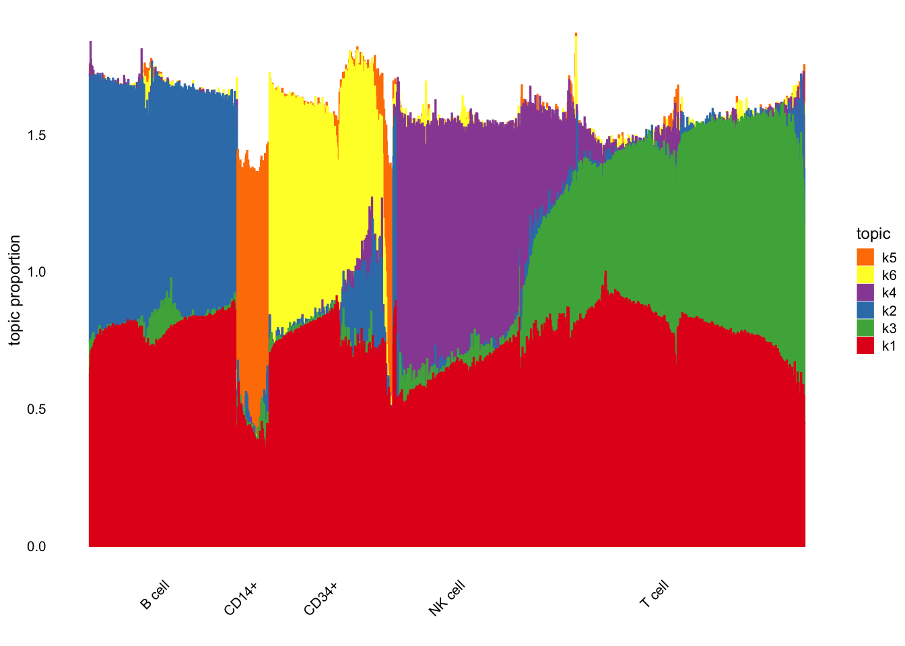

Last updated: 2024-10-03
Checks: 6 1
Knit directory: log1p_experiments/
This reproducible R Markdown analysis was created with workflowr (version 1.7.1). The Checks tab describes the reproducibility checks that were applied when the results were created. The Past versions tab lists the development history.
The R Markdown is untracked by Git. To know which version of the R
Markdown file created these results, you’ll want to first commit it to
the Git repo. If you’re still working on the analysis, you can ignore
this warning. When you’re finished, you can run
wflow_publish to commit the R Markdown file and build the
HTML.
Great job! The global environment was empty. Objects defined in the global environment can affect the analysis in your R Markdown file in unknown ways. For reproduciblity it’s best to always run the code in an empty environment.
The command set.seed(20240402) was run prior to running
the code in the R Markdown file. Setting a seed ensures that any results
that rely on randomness, e.g. subsampling or permutations, are
reproducible.
Great job! Recording the operating system, R version, and package versions is critical for reproducibility.
Nice! There were no cached chunks for this analysis, so you can be confident that you successfully produced the results during this run.
Great job! Using relative paths to the files within your workflowr project makes it easier to run your code on other machines.
Great! You are using Git for version control. Tracking code development and connecting the code version to the results is critical for reproducibility.
The results in this page were generated with repository version 7419934. See the Past versions tab to see a history of the changes made to the R Markdown and HTML files.
Note that you need to be careful to ensure that all relevant files for
the analysis have been committed to Git prior to generating the results
(you can use wflow_publish or
wflow_git_commit). workflowr only checks the R Markdown
file, but you know if there are other scripts or data files that it
depends on. Below is the status of the Git repository when the results
were generated:
Ignored files:
Ignored: .Rhistory
Untracked files:
Untracked: analysis/cnmf_comparison.Rmd
Note that any generated files, e.g. HTML, png, CSS, etc., are not included in this status report because it is ok for generated content to have uncommitted changes.
There are no past versions. Publish this analysis with
wflow_publish() to start tracking its development.
library(dplyr)
Attaching package: 'dplyr'The following objects are masked from 'package:stats':
filter, lagThe following objects are masked from 'package:base':
intersect, setdiff, setequal, unionusage_df <- readr::read_csv(
"~/Documents/data/passPCA/experiment_results/cNMF_pbmc_facs_usage.csv"
)Rows: 3774 Columns: 7── Column specification ────────────────────────────────────────────────────────
Delimiter: ","
chr (1): barcode
dbl (6): 1, 2, 3, 4, 5, 6
ℹ Use `spec()` to retrieve the full column specification for this data.
ℹ Specify the column types or set `show_col_types = FALSE` to quiet this message.top_genes_df <- readr::read_csv(
"~/Documents/data/passPCA/experiment_results/cNMF_pbmc_facs_top_genes.csv"
)New names:
Rows: 100 Columns: 7
── Column specification
──────────────────────────────────────────────────────── Delimiter: "," chr
(6): 1, 2, 3, 4, 5, 6 dbl (1): ...1
ℹ Use `spec()` to retrieve the full column specification for this data. ℹ
Specify the column types or set `show_col_types = FALSE` to quiet this message.
• `` -> `...1`library(fastTopics)
cNMF_LL <- usage_df %>%
dplyr::select(-barcode) %>%
as.matrix()
structure_plot(cNMF_LL, grouping = pbmc_facs$samples$subpop)Running tsne on 404 x 6 matrix.Read the 404 x 6 data matrix successfully!
Using no_dims = 1, perplexity = 100.000000, and theta = 0.100000
Computing input similarities...
Building tree...
Done in 0.05 seconds (sparsity = 0.877169)!
Learning embedding...
Iteration 50: error is 45.477176 (50 iterations in 0.03 seconds)
Iteration 100: error is 43.976005 (50 iterations in 0.02 seconds)
Iteration 150: error is 43.972384 (50 iterations in 0.02 seconds)
Iteration 200: error is 43.972369 (50 iterations in 0.02 seconds)
Iteration 250: error is 43.972411 (50 iterations in 0.02 seconds)
Iteration 300: error is 0.362878 (50 iterations in 0.02 seconds)
Iteration 350: error is 0.362473 (50 iterations in 0.02 seconds)
Iteration 400: error is 0.361798 (50 iterations in 0.02 seconds)
Iteration 450: error is 0.362472 (50 iterations in 0.02 seconds)
Iteration 500: error is 0.362474 (50 iterations in 0.02 seconds)
Iteration 550: error is 0.362472 (50 iterations in 0.02 seconds)
Iteration 600: error is 0.362474 (50 iterations in 0.02 seconds)
Iteration 650: error is 0.362135 (50 iterations in 0.02 seconds)
Iteration 700: error is 0.361125 (50 iterations in 0.02 seconds)
Iteration 750: error is 0.361718 (50 iterations in 0.02 seconds)
Iteration 800: error is 0.361907 (50 iterations in 0.02 seconds)
Iteration 850: error is 0.361121 (50 iterations in 0.02 seconds)
Iteration 900: error is 0.362471 (50 iterations in 0.02 seconds)
Iteration 950: error is 0.362472 (50 iterations in 0.02 seconds)
Iteration 1000: error is 0.361536 (50 iterations in 0.02 seconds)
Fitting performed in 0.45 seconds.Running tsne on 82 x 6 matrix.Read the 82 x 6 data matrix successfully!
Using no_dims = 1, perplexity = 26.000000, and theta = 0.100000
Computing input similarities...
Building tree...
Done in 0.00 seconds (sparsity = 0.985723)!
Learning embedding...
Iteration 50: error is 52.038282 (50 iterations in 0.00 seconds)
Iteration 100: error is 50.962399 (50 iterations in 0.00 seconds)
Iteration 150: error is 52.392807 (50 iterations in 0.00 seconds)
Iteration 200: error is 49.580919 (50 iterations in 0.00 seconds)
Iteration 250: error is 50.972671 (50 iterations in 0.00 seconds)
Iteration 300: error is 1.774223 (50 iterations in 0.00 seconds)
Iteration 350: error is 0.568662 (50 iterations in 0.00 seconds)
Iteration 400: error is 0.554242 (50 iterations in 0.00 seconds)
Iteration 450: error is 0.554263 (50 iterations in 0.00 seconds)
Iteration 500: error is 0.554265 (50 iterations in 0.00 seconds)
Iteration 550: error is 0.554265 (50 iterations in 0.00 seconds)
Iteration 600: error is 0.554265 (50 iterations in 0.00 seconds)
Iteration 650: error is 0.554265 (50 iterations in 0.00 seconds)
Iteration 700: error is 0.554265 (50 iterations in 0.00 seconds)
Iteration 750: error is 0.554265 (50 iterations in 0.00 seconds)
Iteration 800: error is 0.554265 (50 iterations in 0.00 seconds)
Iteration 850: error is 0.554268 (50 iterations in 0.00 seconds)
Iteration 900: error is 0.554265 (50 iterations in 0.00 seconds)
Iteration 950: error is 0.554265 (50 iterations in 0.00 seconds)
Iteration 1000: error is 0.554265 (50 iterations in 0.00 seconds)
Fitting performed in 0.05 seconds.Running tsne on 364 x 6 matrix.Read the 364 x 6 data matrix successfully!
Using no_dims = 1, perplexity = 100.000000, and theta = 0.100000
Computing input similarities...
Building tree...
Done in 0.05 seconds (sparsity = 0.951116)!
Learning embedding...
Iteration 50: error is 43.745496 (50 iterations in 0.02 seconds)
Iteration 100: error is 43.745498 (50 iterations in 0.02 seconds)
Iteration 150: error is 43.745498 (50 iterations in 0.02 seconds)
Iteration 200: error is 43.745498 (50 iterations in 0.02 seconds)
Iteration 250: error is 43.745498 (50 iterations in 0.02 seconds)
Iteration 300: error is 0.273862 (50 iterations in 0.02 seconds)
Iteration 350: error is 0.263067 (50 iterations in 0.02 seconds)
Iteration 400: error is 0.263091 (50 iterations in 0.02 seconds)
Iteration 450: error is 0.263082 (50 iterations in 0.02 seconds)
Iteration 500: error is 0.263082 (50 iterations in 0.02 seconds)
Iteration 550: error is 0.263083 (50 iterations in 0.02 seconds)
Iteration 600: error is 0.263081 (50 iterations in 0.02 seconds)
Iteration 650: error is 0.263083 (50 iterations in 0.02 seconds)
Iteration 700: error is 0.263082 (50 iterations in 0.02 seconds)
Iteration 750: error is 0.263083 (50 iterations in 0.02 seconds)
Iteration 800: error is 0.263083 (50 iterations in 0.02 seconds)
Iteration 850: error is 0.263082 (50 iterations in 0.02 seconds)
Iteration 900: error is 0.263082 (50 iterations in 0.02 seconds)
Iteration 950: error is 0.263082 (50 iterations in 0.02 seconds)
Iteration 1000: error is 0.263083 (50 iterations in 0.02 seconds)
Fitting performed in 0.39 seconds.Running tsne on 351 x 6 matrix.Read the 351 x 6 data matrix successfully!
Using no_dims = 1, perplexity = 100.000000, and theta = 0.100000
Computing input similarities...
Building tree...
Done in 0.05 seconds (sparsity = 0.958361)!
Learning embedding...
Iteration 50: error is 43.859543 (50 iterations in 0.02 seconds)
Iteration 100: error is 42.905984 (50 iterations in 0.02 seconds)
Iteration 150: error is 42.880564 (50 iterations in 0.02 seconds)
Iteration 200: error is 42.880511 (50 iterations in 0.02 seconds)
Iteration 250: error is 42.880520 (50 iterations in 0.02 seconds)
Iteration 300: error is 0.277940 (50 iterations in 0.02 seconds)
Iteration 350: error is 0.277919 (50 iterations in 0.02 seconds)
Iteration 400: error is 0.277917 (50 iterations in 0.02 seconds)
Iteration 450: error is 0.277917 (50 iterations in 0.02 seconds)
Iteration 500: error is 0.277917 (50 iterations in 0.02 seconds)
Iteration 550: error is 0.277918 (50 iterations in 0.02 seconds)
Iteration 600: error is 0.277917 (50 iterations in 0.02 seconds)
Iteration 650: error is 0.277917 (50 iterations in 0.02 seconds)
Iteration 700: error is 0.277917 (50 iterations in 0.02 seconds)
Iteration 750: error is 0.277917 (50 iterations in 0.02 seconds)
Iteration 800: error is 0.277917 (50 iterations in 0.02 seconds)
Iteration 850: error is 0.277917 (50 iterations in 0.02 seconds)
Iteration 900: error is 0.277917 (50 iterations in 0.02 seconds)
Iteration 950: error is 0.277917 (50 iterations in 0.02 seconds)
Iteration 1000: error is 0.277917 (50 iterations in 0.02 seconds)
Fitting performed in 0.36 seconds.Running tsne on 799 x 6 matrix.Read the 799 x 6 data matrix successfully!
Using no_dims = 1, perplexity = 100.000000, and theta = 0.100000
Computing input similarities...
Building tree...
Done in 0.11 seconds (sparsity = 0.489850)!
Learning embedding...
Iteration 50: error is 53.659860 (50 iterations in 0.05 seconds)
Iteration 100: error is 50.254173 (50 iterations in 0.05 seconds)
Iteration 150: error is 50.252491 (50 iterations in 0.05 seconds)
Iteration 200: error is 50.252509 (50 iterations in 0.05 seconds)
Iteration 250: error is 50.252501 (50 iterations in 0.05 seconds)
Iteration 300: error is 0.686925 (50 iterations in 0.05 seconds)
Iteration 350: error is 0.649647 (50 iterations in 0.05 seconds)
Iteration 400: error is 0.645583 (50 iterations in 0.05 seconds)
Iteration 450: error is 0.645320 (50 iterations in 0.05 seconds)
Iteration 500: error is 0.645320 (50 iterations in 0.05 seconds)
Iteration 550: error is 0.645320 (50 iterations in 0.05 seconds)
Iteration 600: error is 0.645295 (50 iterations in 0.05 seconds)
Iteration 650: error is 0.645320 (50 iterations in 0.05 seconds)
Iteration 700: error is 0.645319 (50 iterations in 0.05 seconds)
Iteration 750: error is 0.645320 (50 iterations in 0.05 seconds)
Iteration 800: error is 0.645319 (50 iterations in 0.05 seconds)
Iteration 850: error is 0.645321 (50 iterations in 0.05 seconds)
Iteration 900: error is 0.645320 (50 iterations in 0.05 seconds)
Iteration 950: error is 0.645290 (50 iterations in 0.05 seconds)
Iteration 1000: error is 0.645320 (50 iterations in 0.05 seconds)
Fitting performed in 1.00 seconds.
library(passPCA)
log1p_k1 <- passPCA::fit_factor_model_log1p_quad_approx_sparse(
Y = pbmc_facs$counts,
K = 1,
approx_range = c(0, 1.25),
maxiter = 10,
s = Matrix::rowSums(pbmc_facs$counts) / mean(Matrix::rowSums(pbmc_facs$counts))
)Fitting log1p factor model to 3774 x 16791 count matrix.
Iteration 0: objective = -3.893360614991e+07
Iteration 1: objective = -1.115809936941e+07
Iteration 2: objective = -5.285327467284e+06
Iteration 3: objective = -5.088188689677e+06
Iteration 4: objective = -5.055779885455e+06
Iteration 5: objective = -5.025434422216e+06
Iteration 6: objective = -4.997904479692e+06
Iteration 7: objective = -4.988518683925e+06
Iteration 8: objective = -4.988455558858e+06
Iteration 9: objective = -4.988455558858e+06n <- nrow(pbmc_facs$counts)
p <- ncol(pbmc_facs$counts)
K <- 6
init_LL <- log1p_k1$U %>%
cbind(
matrix(
data = rexp(
n = n * (K - 1), rate = 15
),
nrow = n,
ncol = K - 1
)
)
init_FF <- log1p_k1$V %>%
cbind(
matrix(
data = rexp(
n = p * (K - 1), rate = 15
),
nrow = p,
ncol = K - 1
)
)
log1p_k1 <- passPCA::fit_factor_model_log1p_quad_approx_sparse(
Y = pbmc_facs$counts,
K = 6,
maxiter = 100,
approx_range = c(0, 1.25),
init_U = init_LL,
init_V = init_FF,
s = Matrix::rowSums(pbmc_facs$counts) / mean(Matrix::rowSums(pbmc_facs$counts))
)Fitting log1p factor model to 3774 x 16791 count matrix.
Iteration 0: objective = -5.586083119941e+06
Iteration 1: objective = -4.899206993832e+06
Iteration 2: objective = -4.466659053042e+06
Iteration 3: objective = -4.328286394552e+06
Iteration 4: objective = -4.280192190505e+06
Iteration 5: objective = -4.260043301502e+06
Iteration 6: objective = -4.248534959872e+06
Iteration 7: objective = -4.240564890749e+06
Iteration 8: objective = -4.233527057501e+06
Iteration 9: objective = -4.225622516578e+06
Iteration 10: objective = -4.216043448305e+06
Iteration 11: objective = -4.205455625993e+06
Iteration 12: objective = -4.196024239353e+06
Iteration 13: objective = -4.188587235532e+06
Iteration 14: objective = -4.182807655401e+06
Iteration 15: objective = -4.178356442678e+06
Iteration 16: objective = -4.175009068668e+06
Iteration 17: objective = -4.172618918169e+06
Iteration 18: objective = -4.170813566746e+06
Iteration 19: objective = -4.169383294845e+06
Iteration 20: objective = -4.168217974409e+06
Iteration 21: objective = -4.167257201361e+06
Iteration 22: objective = -4.166461770390e+06
Iteration 23: objective = -4.165787111403e+06
Iteration 24: objective = -4.165206951639e+06
Iteration 25: objective = -4.164705980506e+06
Iteration 26: objective = -4.164272808328e+06
Iteration 27: objective = -4.163898475542e+06
Iteration 28: objective = -4.163576259718e+06
Iteration 29: objective = -4.163300228926e+06
Iteration 30: objective = -4.163063946196e+06
Iteration 31: objective = -4.162860496598e+06
Iteration 32: objective = -4.162685102902e+06
Iteration 33: objective = -4.162534179192e+06
Iteration 34: objective = -4.162403243916e+06
Iteration 35: objective = -4.162287827044e+06
Iteration 36: objective = -4.162184805225e+06
Iteration 37: objective = -4.162092413625e+06
Iteration 38: objective = -4.162008279506e+06
Iteration 39: objective = -4.161930668807e+06
Iteration 40: objective = -4.161858502761e+06
Iteration 41: objective = -4.161791000417e+06
Iteration 42: objective = -4.161727520340e+06
Iteration 43: objective = -4.161667595366e+06
Iteration 44: objective = -4.161610849846e+06
Iteration 45: objective = -4.161556984703e+06
Iteration 46: objective = -4.161505733875e+06
Iteration 47: objective = -4.161456855090e+06
Iteration 48: objective = -4.161410172928e+06
Iteration 49: objective = -4.161365495238e+06
Iteration 50: objective = -4.161322639461e+06
Iteration 51: objective = -4.161281472742e+06
Iteration 52: objective = -4.161241861819e+06
Iteration 53: objective = -4.161203712021e+06
Iteration 54: objective = -4.161166895842e+06
Iteration 55: objective = -4.161131292888e+06
Iteration 56: objective = -4.161096932653e+06
Iteration 57: objective = -4.161063753220e+06
Iteration 58: objective = -4.161031629637e+06
Iteration 59: objective = -4.161000502648e+06
Iteration 60: objective = -4.160970305261e+06
Iteration 61: objective = -4.160940978684e+06
Iteration 62: objective = -4.160912466718e+06
Iteration 63: objective = -4.160884729072e+06
Iteration 64: objective = -4.160857732978e+06
Iteration 65: objective = -4.160831437720e+06
Iteration 66: objective = -4.160805806430e+06
Iteration 67: objective = -4.160780809806e+06
Iteration 68: objective = -4.160756422724e+06
Iteration 69: objective = -4.160732611352e+06
Iteration 70: objective = -4.160709324934e+06
Iteration 71: objective = -4.160686587493e+06
Iteration 72: objective = -4.160664408460e+06
Iteration 73: objective = -4.160642732958e+06
Iteration 74: objective = -4.160621540158e+06
Iteration 75: objective = -4.160600804631e+06
Iteration 76: objective = -4.160580511372e+06
Iteration 77: objective = -4.160560643206e+06
Iteration 78: objective = -4.160541184803e+06
Iteration 79: objective = -4.160522122725e+06
Iteration 80: objective = -4.160503442562e+06
Iteration 81: objective = -4.160485115884e+06
Iteration 82: objective = -4.160467123881e+06
Iteration 83: objective = -4.160449455519e+06
Iteration 84: objective = -4.160432101725e+06
Iteration 85: objective = -4.160415050271e+06
Iteration 86: objective = -4.160398292076e+06
Iteration 87: objective = -4.160381811139e+06
Iteration 88: objective = -4.160365580554e+06
Iteration 89: objective = -4.160349565598e+06
Iteration 90: objective = -4.160333765341e+06
Iteration 91: objective = -4.160318186428e+06
Iteration 92: objective = -4.160302896481e+06
Iteration 93: objective = -4.160287865076e+06
Iteration 94: objective = -4.160273061282e+06
Iteration 95: objective = -4.160258468238e+06
Iteration 96: objective = -4.160244075097e+06
Iteration 97: objective = -4.160229871172e+06
Iteration 98: objective = -4.160215845710e+06
Iteration 99: objective = -4.160201987412e+06normalize_bars <- function(LL) {
max_col <- apply(LL, 2, max)
sweep(LL, 2, max_col, FUN = "/")
}
LL <- log1p_k1$U
LL <- normalize_bars(LL)
structure_plot(LL, grouping = pbmc_facs$samples$subpop)Running tsne on 413 x 6 matrix.Read the 413 x 6 data matrix successfully!
Using no_dims = 1, perplexity = 100.000000, and theta = 0.100000
Computing input similarities...
Building tree...
Done in 0.46 seconds (sparsity = 0.878049)!
Learning embedding...
Iteration 50: error is 45.004843 (50 iterations in 0.21 seconds)
Iteration 100: error is 45.004843 (50 iterations in 0.20 seconds)
Iteration 150: error is 45.004843 (50 iterations in 0.22 seconds)
Iteration 200: error is 45.004843 (50 iterations in 0.25 seconds)
Iteration 250: error is 45.004843 (50 iterations in 0.04 seconds)
Iteration 300: error is 0.464228 (50 iterations in 0.03 seconds)
Iteration 350: error is 0.448563 (50 iterations in 0.02 seconds)
Iteration 400: error is 0.447746 (50 iterations in 0.02 seconds)
Iteration 450: error is 0.447739 (50 iterations in 0.02 seconds)
Iteration 500: error is 0.447739 (50 iterations in 0.02 seconds)
Iteration 550: error is 0.447739 (50 iterations in 0.02 seconds)
Iteration 600: error is 0.447739 (50 iterations in 0.02 seconds)
Iteration 650: error is 0.447739 (50 iterations in 0.02 seconds)
Iteration 700: error is 0.447739 (50 iterations in 0.02 seconds)
Iteration 750: error is 0.447739 (50 iterations in 0.02 seconds)
Iteration 800: error is 0.447739 (50 iterations in 0.02 seconds)
Iteration 850: error is 0.447739 (50 iterations in 0.02 seconds)
Iteration 900: error is 0.447739 (50 iterations in 0.02 seconds)
Iteration 950: error is 0.447739 (50 iterations in 0.02 seconds)
Iteration 1000: error is 0.447739 (50 iterations in 0.02 seconds)
Fitting performed in 1.26 seconds.Running tsne on 89 x 6 matrix.Read the 89 x 6 data matrix successfully!
Using no_dims = 1, perplexity = 28.000000, and theta = 0.100000
Computing input similarities...
Building tree...
Done in 0.00 seconds (sparsity = 0.984219)!
Learning embedding...
Iteration 50: error is 50.354681 (50 iterations in 0.00 seconds)
Iteration 100: error is 49.675337 (50 iterations in 0.00 seconds)
Iteration 150: error is 50.865225 (50 iterations in 0.00 seconds)
Iteration 200: error is 54.472727 (50 iterations in 0.00 seconds)
Iteration 250: error is 49.752627 (50 iterations in 0.00 seconds)
Iteration 300: error is 1.883664 (50 iterations in 0.00 seconds)
Iteration 350: error is 0.699503 (50 iterations in 0.00 seconds)
Iteration 400: error is 0.517791 (50 iterations in 0.00 seconds)
Iteration 450: error is 0.516933 (50 iterations in 0.00 seconds)
Iteration 500: error is 0.516932 (50 iterations in 0.00 seconds)
Iteration 550: error is 0.516932 (50 iterations in 0.00 seconds)
Iteration 600: error is 0.516932 (50 iterations in 0.00 seconds)
Iteration 650: error is 0.516932 (50 iterations in 0.00 seconds)
Iteration 700: error is 0.516932 (50 iterations in 0.00 seconds)
Iteration 750: error is 0.516932 (50 iterations in 0.00 seconds)
Iteration 800: error is 0.516932 (50 iterations in 0.00 seconds)
Iteration 850: error is 0.516932 (50 iterations in 0.00 seconds)
Iteration 900: error is 0.516932 (50 iterations in 0.00 seconds)
Iteration 950: error is 0.516932 (50 iterations in 0.00 seconds)
Iteration 1000: error is 0.516932 (50 iterations in 0.00 seconds)
Fitting performed in 0.05 seconds.Running tsne on 358 x 6 matrix.Read the 358 x 6 data matrix successfully!
Using no_dims = 1, perplexity = 100.000000, and theta = 0.100000
Computing input similarities...
Building tree...
Done in 0.05 seconds (sparsity = 0.957336)!
Learning embedding...
Iteration 50: error is 43.514724 (50 iterations in 0.02 seconds)
Iteration 100: error is 43.514726 (50 iterations in 0.02 seconds)
Iteration 150: error is 43.514726 (50 iterations in 0.02 seconds)
Iteration 200: error is 43.514726 (50 iterations in 0.02 seconds)
Iteration 250: error is 43.514726 (50 iterations in 0.02 seconds)
Iteration 300: error is 0.176844 (50 iterations in 0.02 seconds)
Iteration 350: error is 0.173632 (50 iterations in 0.02 seconds)
Iteration 400: error is 0.173445 (50 iterations in 0.02 seconds)
Iteration 450: error is 0.173440 (50 iterations in 0.02 seconds)
Iteration 500: error is 0.173440 (50 iterations in 0.02 seconds)
Iteration 550: error is 0.173439 (50 iterations in 0.02 seconds)
Iteration 600: error is 0.173439 (50 iterations in 0.03 seconds)
Iteration 650: error is 0.173439 (50 iterations in 0.02 seconds)
Iteration 700: error is 0.173440 (50 iterations in 0.02 seconds)
Iteration 750: error is 0.173440 (50 iterations in 0.02 seconds)
Iteration 800: error is 0.173439 (50 iterations in 0.02 seconds)
Iteration 850: error is 0.173439 (50 iterations in 0.02 seconds)
Iteration 900: error is 0.173441 (50 iterations in 0.02 seconds)
Iteration 950: error is 0.173440 (50 iterations in 0.02 seconds)
Iteration 1000: error is 0.173439 (50 iterations in 0.02 seconds)
Fitting performed in 0.41 seconds.Running tsne on 345 x 6 matrix.Read the 345 x 6 data matrix successfully!
Using no_dims = 1, perplexity = 100.000000, and theta = 0.100000
Computing input similarities...
Building tree...
Done in 0.05 seconds (sparsity = 0.965763)!
Learning embedding...
Iteration 50: error is 43.258902 (50 iterations in 0.02 seconds)
Iteration 100: error is 43.258903 (50 iterations in 0.02 seconds)
Iteration 150: error is 43.258903 (50 iterations in 0.02 seconds)
Iteration 200: error is 43.258903 (50 iterations in 0.03 seconds)
Iteration 250: error is 43.258903 (50 iterations in 0.03 seconds)
Iteration 300: error is 0.447039 (50 iterations in 0.02 seconds)
Iteration 350: error is 0.409323 (50 iterations in 0.02 seconds)
Iteration 400: error is 0.409001 (50 iterations in 0.02 seconds)
Iteration 450: error is 0.408991 (50 iterations in 0.02 seconds)
Iteration 500: error is 0.408991 (50 iterations in 0.02 seconds)
Iteration 550: error is 0.408991 (50 iterations in 0.02 seconds)
Iteration 600: error is 0.408991 (50 iterations in 0.02 seconds)
Iteration 650: error is 0.408991 (50 iterations in 0.02 seconds)
Iteration 700: error is 0.408991 (50 iterations in 0.02 seconds)
Iteration 750: error is 0.408991 (50 iterations in 0.02 seconds)
Iteration 800: error is 0.408991 (50 iterations in 0.02 seconds)
Iteration 850: error is 0.408991 (50 iterations in 0.02 seconds)
Iteration 900: error is 0.408991 (50 iterations in 0.02 seconds)
Iteration 950: error is 0.408991 (50 iterations in 0.02 seconds)
Iteration 1000: error is 0.408991 (50 iterations in 0.02 seconds)
Fitting performed in 0.42 seconds.Running tsne on 795 x 6 matrix.Read the 795 x 6 data matrix successfully!
Using no_dims = 1, perplexity = 100.000000, and theta = 0.100000
Computing input similarities...
Building tree...
Done in 0.12 seconds (sparsity = 0.476000)!
Learning embedding...
Iteration 50: error is 49.236692 (50 iterations in 0.06 seconds)
Iteration 100: error is 47.543251 (50 iterations in 0.05 seconds)
Iteration 150: error is 47.539229 (50 iterations in 0.06 seconds)
Iteration 200: error is 47.539216 (50 iterations in 0.05 seconds)
Iteration 250: error is 47.539205 (50 iterations in 0.05 seconds)
Iteration 300: error is 0.452732 (50 iterations in 0.05 seconds)
Iteration 350: error is 0.420775 (50 iterations in 0.05 seconds)
Iteration 400: error is 0.418297 (50 iterations in 0.05 seconds)
Iteration 450: error is 0.418143 (50 iterations in 0.06 seconds)
Iteration 500: error is 0.418131 (50 iterations in 0.05 seconds)
Iteration 550: error is 0.418126 (50 iterations in 0.05 seconds)
Iteration 600: error is 0.418127 (50 iterations in 0.06 seconds)
Iteration 650: error is 0.418127 (50 iterations in 0.05 seconds)
Iteration 700: error is 0.418127 (50 iterations in 0.06 seconds)
Iteration 750: error is 0.418127 (50 iterations in 0.06 seconds)
Iteration 800: error is 0.418129 (50 iterations in 0.05 seconds)
Iteration 850: error is 0.418129 (50 iterations in 0.06 seconds)
Iteration 900: error is 0.418127 (50 iterations in 0.05 seconds)
Iteration 950: error is 0.418127 (50 iterations in 0.05 seconds)
Iteration 1000: error is 0.418127 (50 iterations in 0.06 seconds)
Fitting performed in 1.10 seconds.
FF <- log1p_k1$V
rownames(FF) <- colnames(pbmc_facs$counts)library(clusterProfiler)clusterProfiler v4.12.0 For help: https://yulab-smu.top/biomedical-knowledge-mining-book/
If you use clusterProfiler in published research, please cite:
T Wu, E Hu, S Xu, M Chen, P Guo, Z Dai, T Feng, L Zhou, W Tang, L Zhan, X Fu, S Liu, X Bo, and G Yu. clusterProfiler 4.0: A universal enrichment tool for interpreting omics data. The Innovation. 2021, 2(3):100141
Attaching package: 'clusterProfiler'The following object is masked from 'package:stats':
filterlibrary(fgsea)
library(AnnotationDbi)Loading required package: stats4Loading required package: BiocGenerics
Attaching package: 'BiocGenerics'The following objects are masked from 'package:dplyr':
combine, intersect, setdiff, unionThe following objects are masked from 'package:stats':
IQR, mad, sd, var, xtabsThe following objects are masked from 'package:base':
anyDuplicated, aperm, append, as.data.frame, basename, cbind,
colnames, dirname, do.call, duplicated, eval, evalq, Filter, Find,
get, grep, grepl, intersect, is.unsorted, lapply, Map, mapply,
match, mget, order, paste, pmax, pmax.int, pmin, pmin.int,
Position, rank, rbind, Reduce, rownames, sapply, setdiff, table,
tapply, union, unique, unsplit, which.max, which.minLoading required package: BiobaseWelcome to Bioconductor
Vignettes contain introductory material; view with
'browseVignettes()'. To cite Bioconductor, see
'citation("Biobase")', and for packages 'citation("pkgname")'.Loading required package: IRangesLoading required package: S4Vectors
Attaching package: 'S4Vectors'The following object is masked from 'package:clusterProfiler':
renameThe following objects are masked from 'package:dplyr':
first, renameThe following object is masked from 'package:utils':
findMatchesThe following objects are masked from 'package:base':
expand.grid, I, unname
Attaching package: 'IRanges'The following object is masked from 'package:clusterProfiler':
sliceThe following objects are masked from 'package:dplyr':
collapse, desc, slice
Attaching package: 'AnnotationDbi'The following object is masked from 'package:clusterProfiler':
selectThe following object is masked from 'package:dplyr':
selectlibrary(org.Hs.eg.db)gv <- pbmc_facs$genes$symbol
names(gv) <- pbmc_facs$genes$ensembl
top_genes_df <- top_genes_df %>%
dplyr::select(-`...1`)
get_go_terms <- function(V) {
K <- ncol(V)
genes_vec <- c()
go_terms_vec <- c()
for (k in 1:K) {
driving_genes <- names(sort(V[,k], decreasing = TRUE))[1:20]
go_result <- enrichGO(gene = driving_genes,
OrgDb = org.Hs.eg.db,
keyType = "ENSEMBL",
ont = "BP",
pAdjustMethod = "bonferroni",
pvalueCutoff = 0.05,
qvalueCutoff = 0.1)@result
go_result <- go_result %>%
dplyr::filter(p.adjust < .01)
go_terms <- go_result$Description
genes_vec <- c(genes_vec, paste(unname(gv[driving_genes]), collapse = ", "))
go_terms_vec <- c(go_terms_vec, paste(go_terms, collapse = ", "))
}
go_df <- data.frame(
driving_genes = genes_vec,
go_terms = go_terms_vec,
factor = 1:K
)
return(go_df)
}
get_go_terms_cNMF <- function(sets_df) {
K <- ncol(sets_df)
genes_vec <- c()
go_terms_vec <- c()
for (k in 1:K) {
driving_genes <- (sets_df[[k]])[1:20]
go_result <- enrichGO(gene = driving_genes,
OrgDb = org.Hs.eg.db,
keyType = "ENSEMBL",
ont = "BP",
pAdjustMethod = "bonferroni",
pvalueCutoff = 0.05,
qvalueCutoff = 0.1)@result
go_result <- go_result %>%
dplyr::filter(p.adjust < .01)
go_terms <- go_result$Description
genes_vec <- c(genes_vec, paste(unname(gv[driving_genes]), collapse = ", "))
go_terms_vec <- c(go_terms_vec, paste(go_terms, collapse = ", "))
}
go_df <- data.frame(
driving_genes = genes_vec,
go_terms = go_terms_vec,
factor = 1:K
)
return(go_df)
}
gdf_log1p <- get_go_terms(FF)
gdf_cNMF <- get_go_terms_cNMF(top_genes_df)The log1p go terms:
knitr::kable(gdf_log1p)| driving_genes | go_terms | factor |
|---|---|---|
| RPL13, RPS18, RPS12, RPS27, RPS14, RPS2, RPL32, RPL13A, RPS19, RPS6, RPLP2, RPL34, RPL21, RPLP1, RPL31, RPL10, RPS23, RPS15A, RPS3, RPS27A | cytoplasmic translation, ribosomal small subunit biogenesis, ribosome biogenesis, ribosome assembly, ribosomal small subunit assembly, non-membrane-bounded organelle assembly, protein-RNA complex assembly, protein-RNA complex organization | 1 |
| CD74, HLA-DRA, HLA-DRB1, HLA-DPB1, LTB, HLA-DPA1, CD79A, MALAT1, ACTB, HLA-DRB5, CD79B, TMSB4X, B2M, CYBA, CD37, CD52, HLA-B, HLA-DQA1, HLA-A, IGLL5 | antigen processing and presentation of peptide antigen, antigen processing and presentation of exogenous peptide antigen, antigen processing and presentation of exogenous antigen, antigen processing and presentation, antigen processing and presentation of exogenous peptide antigen via MHC class II, MHC protein complex assembly, peptide antigen assembly with MHC protein complex, antigen processing and presentation of peptide antigen via MHC class II, antigen processing and presentation of peptide or polysaccharide antigen via MHC class II, positive regulation of T cell activation, positive regulation of leukocyte cell-cell adhesion, MHC class II protein complex assembly, peptide antigen assembly with MHC class II protein complex, positive regulation of lymphocyte activation, positive regulation of cell-cell adhesion, antigen processing and presentation of endogenous antigen, antigen processing and presentation of endogenous peptide antigen, positive regulation of T cell mediated cytotoxicity, regulation of T cell mediated cytotoxicity, T cell mediated cytotoxicity, positive regulation of T cell mediated immunity, lymphocyte differentiation, positive regulation of leukocyte mediated cytotoxicity, positive regulation of cell killing, regulation of T cell mediated immunity, lymphocyte proliferation, mononuclear cell proliferation, positive regulation of adaptive immune response based on somatic recombination of immune receptors built from immunoglobulin superfamily domains, positive regulation of immune effector process, T cell mediated immunity, positive regulation of adaptive immune response, immune response-activating cell surface receptor signaling pathway, regulation of leukocyte mediated cytotoxicity, leukocyte proliferation, regulation of cell killing, dendritic cell antigen processing and presentation, positive regulation of lymphocyte mediated immunity, antigen receptor-mediated signaling pathway, positive regulation of leukocyte mediated immunity, detection of bacterium, detection of other organism, regulation of adaptive immune response based on somatic recombination of immune receptors built from immunoglobulin superfamily domains, regulation of adaptive immune response, leukocyte mediated cytotoxicity, regulation of lymphocyte proliferation, regulation of mononuclear cell proliferation, positive regulation of T cell differentiation, regulation of lymphocyte mediated immunity, detection of external biotic stimulus, T cell differentiation, regulation of leukocyte proliferation | 2 |
| ACTB, B2M, LTB, JUNB, TMSB4X, PFN1, HLA-A, IL32, HLA-B, ACTG1, HLA-C, CFL1, CD3D, S100A4, SH3BGRL3, TMSB10, MALAT1, CD3E, CORO1A, ARHGDIB | antigen processing and presentation of peptide antigen via MHC class Ib, antigen processing and presentation via MHC class Ib, actin polymerization or depolymerization, antigen processing and presentation of endogenous peptide antigen via MHC class I, antigen processing and presentation of peptide antigen via MHC class I, antigen processing and presentation of endogenous peptide antigen, positive regulation of T cell mediated cytotoxicity, antigen processing and presentation of endogenous antigen, regulation of T cell mediated cytotoxicity, regulation of adaptive immune response based on somatic recombination of immune receptors built from immunoglobulin superfamily domains, regulation of actin filament organization, T cell mediated cytotoxicity, positive regulation of T cell mediated immunity, positive regulation of leukocyte mediated cytotoxicity, regulation of actin filament polymerization, regulation of adaptive immune response, leukocyte mediated cytotoxicity, positive regulation of cell killing, regulation of actin polymerization or depolymerization | 3 |
| GNLY, NKG7, B2M, MALAT1, ACTB, CCL5, TMSB4X, PFN1, HLA-A, HLA-B, TYROBP, HLA-C, HCST, GZMB, GZMA, CYBA, CST7, TMSB10, FCER1G, CFL1 | cell killing, leukocyte mediated cytotoxicity, antigen processing and presentation of peptide antigen via MHC class I, positive regulation of leukocyte mediated cytotoxicity, positive regulation of cell killing, antigen processing and presentation of peptide antigen via MHC class Ib, antigen processing and presentation via MHC class Ib, antigen processing and presentation of endogenous peptide antigen via MHC class I, antigen processing and presentation of peptide antigen, regulation of leukocyte mediated cytotoxicity, antigen processing and presentation of endogenous peptide antigen, regulation of cell killing, positive regulation of T cell mediated cytotoxicity, antigen processing and presentation of endogenous antigen, antigen processing and presentation, positive regulation of leukocyte mediated immunity, killing of cells of another organism, disruption of cell in another organism, regulation of T cell mediated cytotoxicity, disruption of anatomical structure in another organism, T cell mediated cytotoxicity, positive regulation of T cell mediated immunity | 4 |
| S100A9, S100A8, FTL, S100A4, TMSB4X, FTH1, TYROBP, CST3, LYZ, TMSB10, S100A6, HLA-DRB1, CYBA, CD74, LGALS1, HLA-DRA, AIF1, ACTB, GPX1, HLA-B | maintenance of location in cell, maintenance of location, positive regulation of lymphocyte activation, positive regulation of viral entry into host cell, positive regulation by symbiont of entry into host, positive regulation of T cell activation, regulation of leukocyte differentiation, interleukin-6 production, regulation of interleukin-6 production, positive regulation of leukocyte cell-cell adhesion, positive regulation of leukocyte differentiation, positive regulation of hemopoiesis, positive regulation of viral life cycle, dendritic cell antigen processing and presentation, antigen processing and presentation of endogenous antigen, positive regulation of cell-cell adhesion, fibroblast proliferation, positive regulation of interleukin-6 production, positive regulation of leukocyte mediated cytotoxicity, positive regulation of cell killing | 5 |
| GAPDH, ACTG1, ZFAS1, AIF1, MALAT1, CD74, SNHG7, ACTB, GSTP1, RPS24, GPX1, HLA-DRA, PTMA, FTH1, SPINK2, GNB2L1, TAGLN2, H3F3B, ENO1, LDHB | fibroblast proliferation, negative regulation of apoptotic signaling pathway, negative regulation of intrinsic apoptotic signaling pathway | 6 |
The cNMF go terms:
knitr::kable(gdf_cNMF)| driving_genes | go_terms | factor |
|---|---|---|
| CD3D, CD3E, JUNB, IL32, EEF1A1, RPL10, RPS6, RPL3, NOSIP, CD27, RPS3, RPL4, LDHB, RPL13, TMEM66, RPS2, LCK, IL7R, RPS4X, AES | cytoplasmic translation, T cell differentiation, lymphocyte differentiation | 1 |
| CD74, HLA-DRA, CD79A, HLA-DPA1, CD79B, HLA-DPB1, HLA-DQA1, MS4A1, CD37, HLA-DQA2, HLA-DRB1, HLA-DRB5, HLA-DQB1, BANK1, TCL1A, BLK, LINC00926, SPIB, CD1C, LTB | antigen processing and presentation of exogenous antigen, antigen processing and presentation of exogenous peptide antigen via MHC class II, antigen processing and presentation of peptide antigen via MHC class II, antigen processing and presentation of peptide or polysaccharide antigen via MHC class II, antigen processing and presentation of exogenous peptide antigen, antigen processing and presentation, MHC class II protein complex assembly, peptide antigen assembly with MHC class II protein complex, MHC protein complex assembly, peptide antigen assembly with MHC protein complex, antigen processing and presentation of peptide antigen, positive regulation of T cell activation, positive regulation of leukocyte cell-cell adhesion, antigen receptor-mediated signaling pathway, positive regulation of lymphocyte activation, positive regulation of cell-cell adhesion, immune response-activating cell surface receptor signaling pathway, B cell receptor signaling pathway, lymphocyte proliferation, mononuclear cell proliferation, leukocyte proliferation, antigen processing and presentation of endogenous antigen, dendritic cell antigen processing and presentation, lymphocyte differentiation, B cell activation, T cell activation involved in immune response | 2 |
| NKG7, GNLY, GZMA, GZMB, CST7, CLIC3, KLRB1, CTSW, PRF1, FGFBP2, KLRF1, HCST, FCER1G, HOPX, IFITM2, SPON2, FCGR3A, CD247, KLRD1, CD7 | cell killing, killing of cells of another organism, disruption of cell in another organism, disruption of anatomical structure in another organism, leukocyte mediated cytotoxicity, natural killer cell mediated cytotoxicity, natural killer cell mediated immunity, Fc-gamma receptor signaling pathway, Fc receptor signaling pathway | 3 |
| PRSS57, RP11-620J15.3, ZFAS1, RPS24, CYTL1, C19orf77, EGFL7, SERPINB1, SOX4, EIF3E, SPINK2, SNHG7, CRYGD, H2AFY, CRHBP, HSP90AB1, HINT1, MYB, EBPL, RP11-354E11.2 | 4 | |
| S100A9, S100A8, FCN1, S100A6, FTL, LYZ, SAT1, TYROBP, CD14, S100A4, CST3, FTH1, PSAP, TMEM176B, S100A12, CFD, LST1, TSPO, TYMP, S100A11 | maintenance of location in cell, humoral immune response, innate immune response-activating signaling pathway, maintenance of location | 5 |
| CGN, CH25H, NID1, SDS, CLEC10A, LYZ, CST3, MS4A4A, LRRC4, TIFAB, PROC, LILRA4, CACNA2D3, CD300C, P2RY6, CLEC4C, AXL, PLXNA4, GGN, AC007381.3 | 6 |
sessionInfo()R version 4.4.0 (2024-04-24)
Platform: aarch64-apple-darwin20
Running under: macOS Ventura 13.5
Matrix products: default
BLAS: /Library/Frameworks/R.framework/Versions/4.4-arm64/Resources/lib/libRblas.0.dylib
LAPACK: /Library/Frameworks/R.framework/Versions/4.4-arm64/Resources/lib/libRlapack.dylib; LAPACK version 3.12.0
locale:
[1] en_US.UTF-8/en_US.UTF-8/en_US.UTF-8/C/en_US.UTF-8/en_US.UTF-8
time zone: America/New_York
tzcode source: internal
attached base packages:
[1] stats4 stats graphics grDevices utils datasets methods
[8] base
other attached packages:
[1] org.Hs.eg.db_3.19.1 AnnotationDbi_1.66.0 IRanges_2.38.0
[4] S4Vectors_0.42.0 Biobase_2.64.0 BiocGenerics_0.50.0
[7] fgsea_1.30.0 clusterProfiler_4.12.0 passPCA_0.1.0
[10] fastTopics_0.6-175 dplyr_1.1.4
loaded via a namespace (and not attached):
[1] RColorBrewer_1.1-3 rstudioapi_0.16.0 jsonlite_1.8.8
[4] magrittr_2.0.3 farver_2.1.2 rmarkdown_2.27
[7] fs_1.6.4 zlibbioc_1.50.0 vctrs_0.6.5
[10] memoise_2.0.1 ggtree_3.12.0 SQUAREM_2021.1
[13] mixsqp_0.3-54 htmltools_0.5.8.1 progress_1.2.3
[16] truncnorm_1.0-9 gridGraphics_0.5-1 sass_0.4.9
[19] pracma_2.4.4 bslib_0.7.0 htmlwidgets_1.6.4
[22] plyr_1.8.9 plotly_4.10.4 cachem_1.1.0
[25] igraph_2.0.3 lifecycle_1.0.4 pkgconfig_2.0.3
[28] gson_0.1.0 Matrix_1.7-0 R6_2.5.1
[31] fastmap_1.2.0 GenomeInfoDbData_1.2.12 aplot_0.2.3
[34] digest_0.6.36 enrichplot_1.24.0 colorspace_2.1-0
[37] patchwork_1.2.0 rprojroot_2.0.4 irlba_2.3.5.1
[40] RSQLite_2.3.7 invgamma_1.1 labeling_0.4.3
[43] fansi_1.0.6 httr_1.4.7 polyclip_1.10-6
[46] compiler_4.4.0 bit64_4.0.5 withr_3.0.0
[49] BiocParallel_1.38.0 viridis_0.6.5 DBI_1.2.3
[52] highr_0.11 ggforce_0.4.2 MASS_7.3-61
[55] HDO.db_0.99.1 gtools_3.9.5 tools_4.4.0
[58] scatterpie_0.2.3 ape_5.8 httpuv_1.6.15
[61] glue_1.7.0 quadprog_1.5-8 nlme_3.1-165
[64] GOSemSim_2.30.0 promises_1.3.0 shadowtext_0.1.3
[67] grid_4.4.0 Rtsne_0.17 reshape2_1.4.4
[70] generics_0.1.3 gtable_0.3.5 tzdb_0.4.0
[73] tidyr_1.3.1 data.table_1.15.4 hms_1.1.3
[76] tidygraph_1.3.1 utf8_1.2.4 XVector_0.44.0
[79] ggrepel_0.9.5 pillar_1.9.0 stringr_1.5.1
[82] yulab.utils_0.1.4 vroom_1.6.5 later_1.3.2
[85] splines_4.4.0 tweenr_2.0.3 treeio_1.28.0
[88] lattice_0.22-6 bit_4.0.5 tidyselect_1.2.1
[91] GO.db_3.19.1 Biostrings_2.72.1 pbapply_1.7-2
[94] knitr_1.47 git2r_0.33.0 gridExtra_2.3
[97] RhpcBLASctl_0.23-42 xfun_0.45 graphlayouts_1.1.1
[100] stringi_1.8.4 UCSC.utils_1.0.0 ggfun_0.1.5
[103] workflowr_1.7.1 lazyeval_0.2.2 yaml_2.3.8
[106] evaluate_0.24.0 codetools_0.2-20 ggraph_2.2.1
[109] tibble_3.2.1 qvalue_2.36.0 ggplotify_0.1.2
[112] cli_3.6.3 uwot_0.2.2 RcppParallel_5.1.7
[115] munsell_0.5.1 jquerylib_0.1.4 Rcpp_1.0.13
[118] GenomeInfoDb_1.40.1 png_0.1-8 parallel_4.4.0
[121] ggplot2_3.5.1 readr_2.1.5 blob_1.2.4
[124] prettyunits_1.2.0 DOSE_3.30.1 tidytree_0.4.6
[127] viridisLite_0.4.2 scales_1.3.0 purrr_1.0.2
[130] crayon_1.5.3 rlang_1.1.4 cowplot_1.1.3
[133] fastmatch_1.1-4 ashr_2.2-63 KEGGREST_1.44.1